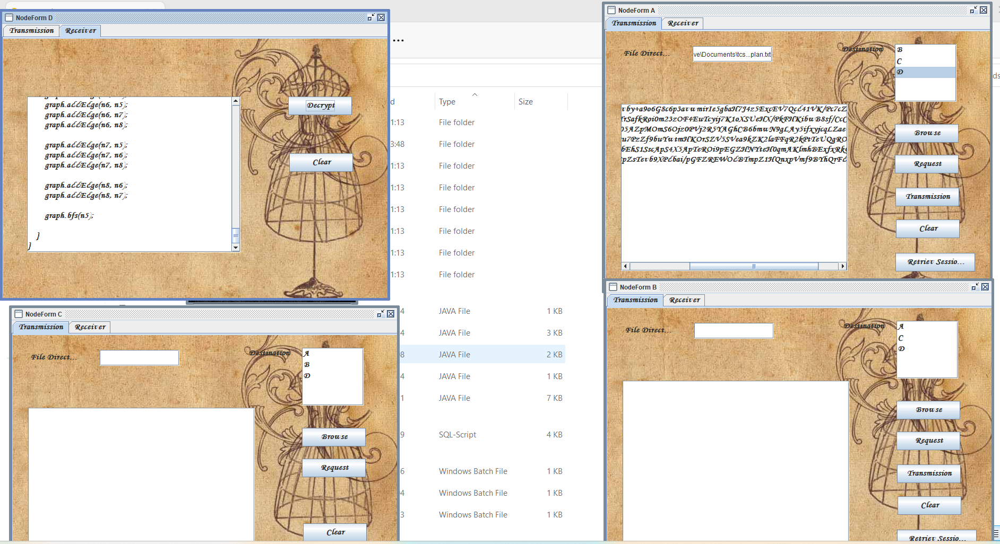
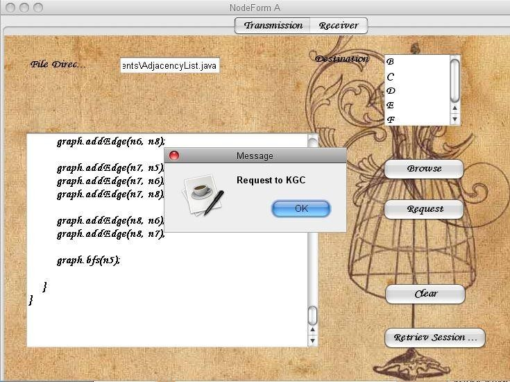
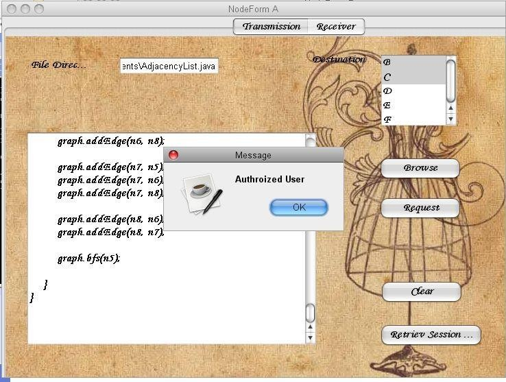

ABSTRACT Key-exchange, in particular Diffie–Hellman key exchange (DHKE), is among the core cryptographic mechanisms for ensuring network security. For key-exchange over the Internet, both security and privacy are desired. In this paper, we develop a family of privacy-preserving authenticated DHKE protocols named deniable Internet key-exchange (DIKE), both in the traditional PKI setting and in the identity-based setting. The newly developed DIKE protocols are of conceptual clarity and practical (online) efficiency. They provide useful privacy protection to both protocol participants, and add novelty and new value to the IKE standard. To the best of our knowledge, our protocols are the first provably secure DHKE protocols that additionally enjoy all the following privacy protection advantages: 1) forward deniability, actually concurrent non- malleable statistical zero-knowledge, for both protocol participants simultaneously; 2) the session transcript and session-key can be generated merely from DH-exponents (together with some public values), which thus cannot be traced to the pair of protocol participants; and 3) exchanged messages do not bear peer’s identity, and do not explicitly bear player role information.
Description: In this application, we are implementing an application for the purpose of Sharing the information between the two persons, private and family purpose with the help of java technology by using cyber security.
1.INTRODUCTION THE Internet Key-Exchange (IKE) protocols are the core cryptographic protocols to ensure Internet security, which specify key exchange mechanisms used to establish shared keys for use in the Internet Protocol Security (IPsec) standards. The IPsec and IKE are intended to protect messages communicated in the IP layer, i.e., “layer 3” of ISO-OSI, which process the transmission of using the network addresses possibly without knowing end-user peers’ identities. The IKE and IPsec can in turn be used to offer confidentiality, authentication and privacy for communication protocols in the higher layers of ISO-OSI. The standard of IKE has gone through two generations. The first generation IKEv1 uses public-key encryption as the authentication mechanism. The second generation IKEv2 uses signatures as the authentication mechanism, with the SIGMA protocol serving as the basis. The IKEv2 protocol is based on DHKE, and works in the “post-specified peer” setting, where the information of who the other party is does not necessarily exist at the session initiation stage and is learnt by the party only after the protocol run evolves (even just in the last round). Actually, this is quite a common case for KE protocols in practice, particularly for the purpose of preserving players’ privacy. For example, the key-exchange session may take place with any one of a set of servers sitting behind a (url/ip) address specified in the session activation; Or, a party may respond to a request (for a KE session) coming from a peer that is not willing to reveal its identity over the network and, sometimes, even not to the responder before the latter has authenticated itself .
   Next